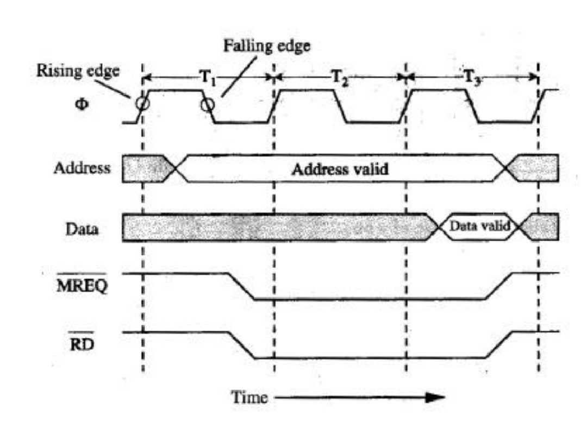

Un bus sincrono è un tipo di bus in cui la trasmissione di dati è coordinata da un segnale di clock. Il segnale di clock è un impulso regolare che sincronizza tutte le operazioni di trasferimento dati, assicurando che i dati vengano trasferiti in modo preciso e prevedibile. Ogni dispositivo collegato a un bus sincrono è sincronizzato con il segnale di clock e sa esattamente quando può inviare o ricevere dati.
In un sistema sincrono, ogni dispositivo collegato al bus deve attendere il segnale di clock per sapere quando può trasferire i dati. Questo tipo di bus è comune in molti sistemi informatici, come nelle connessioni tra la CPU e la memoria.
Nel bus sincrono, il trasferimento dei dati avviene durante un determinato intervallo di tempo in cui il segnale di clock è attivo. Ogni impulso del clock rappresenta una "finestra" temporale in cui un componente del sistema può trasmettere o ricevere dati.
Per esempio, se la CPU deve inviare dei dati alla memoria, la CPU e la memoria sono sincronizzate dal segnale di clock: la CPU sa che, al momento dell'impulso del clock, deve inviare i dati attraverso il bus, e la memoria sa quando deve riceverli.